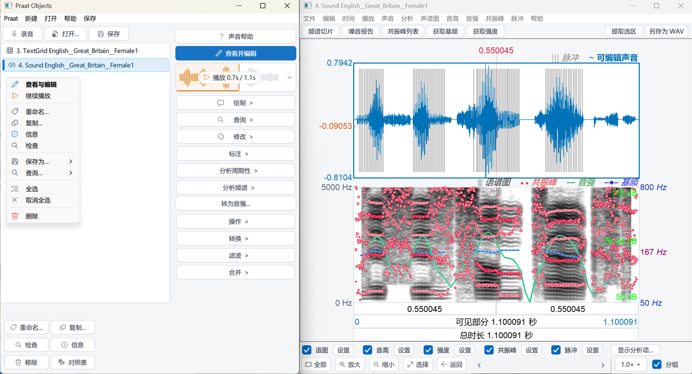
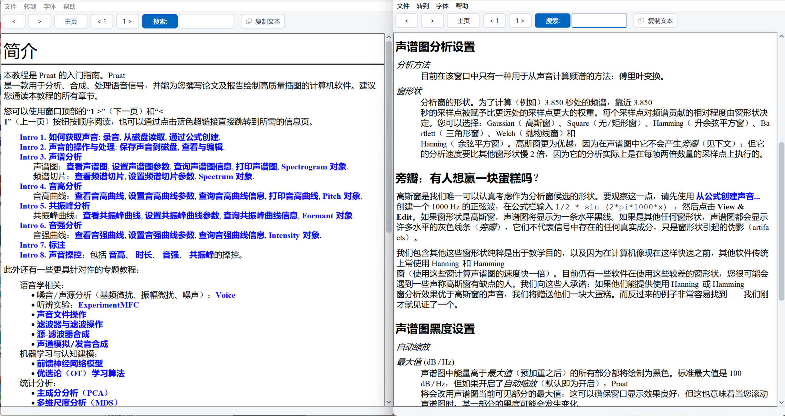

完整界面汉化
菜单栏、参数对话框及设置面板全量汉化，支持中英文自由切换，偏好自动保存。
帮助手册汉化
内置帮助手册主要页面全量翻译为中文，排版与滚动自适应优化。
术语对照表
主窗口常驻对照表按钮，随时核对语音学专业名词中英原词。
文件拖拽打开
Windows 下支持音频（.wav）、标注（.TextGrid）直接拖入载入。
录音窗口增强
按住录音模式、暂存列表自动递增编号与分层波形预览。
多对象批量重命名
选中多个对象时自动显示批量重命名工具，支持统一前后缀与序号递增。
现代化交互与右键菜单
Fluent 矢量图标、列表平滑悬停、右键快捷菜单与二级子菜单、顶部常用工具栏及播放暂停断点续播。


下载 Praat 汉化版
绿色免安装，解压即用。基于官方稳定内核构建。
推荐直接下载 .zip 压缩包。解压到任意文件夹后，双击 Praat.exe 即可直接运行，完全绿色免安装，也可以放在 U 盘里随身携带。
下载 .dmg 镜像文件，双击打开后把 Praat 图标拖入「应用程序」即可（通用版已同时支持 M 系列芯片与 Intel 芯片机型）。
国内网络访问 GitHub Releases 若遇到连接失败或下载中断，可使用上方卡片中的百度网盘下载。链接内已包含提取码，也可点击提取码复制。
若 macOS 提示“无法打开，因为无法验证开发者”，前往系统「设置」→「隐私与安全性」，在页面下方找到 Praat 并点击「仍要打开」即可正常启动。
帮助手册汉化与排版优化
内置帮助手册主要页面已全量翻译为中文，图文教程在不同窗口尺寸下均能自适应流式呈现，方便查阅与学习。
全面翻译常用核心章节，支持中英双向检索与跳转，助你快速掌握语音分析流程。
- 初学者语音学快速上手指南
- 语图（Spectrogram）参数与分析
- 音高提取（Pitch）与共振峰跟踪
- TextGrid 分层切分与标注规范
- Praat 自动化批处理脚本编写

常用语音学与 Praat 术语中英对照表
按模块分组收录核心语音学、数据结构、信号处理与合成算法的标准中英文对照，方便文献阅读与脚本编写。
| 中文术语 | 英文原词 | 分类 | 说明 |
|---|---|---|---|
| 01 · 核心声学与语音特征 | |||
| 基频 / 音高 | Pitch / F0 | 核心声学 | 声带振动的基频频率，单位为赫兹 (Hz) |
| 音高上限 / 下限 | Pitch ceiling / floor | 参数设置 | 音高分析算法搜索的最高与最低频率限制范围 |
| 共振峰 | Formant (F1, F2...) | 核心声学 | 声道共鸣腔产生的特定共振频率峰值与带宽 |
| 音强 / 振幅 | Intensity / Amplitude | 核心声学 | 声音的能量强度 (dB) 与振幅波形包络 |
| 语图 / 声谱图 | Spectrogram | 信号显示 | 呈现时间、频率和能量三维关系的经典分析谱图 |
| 频谱 / 频谱切片 | Spectrum / Spectral slice | 频域分析 | 特定时间点上的瞬时频域能量分布切片 |
| 脉冲 / 声门脉冲 | Pulses / Glottal pulses | 声门活动 | 对应声带振动周期的离散脉冲时间点序列 |
| 谐噪比 | Harmonicity / HNR | 音质分析 | 声音信号中周期谐波成分与非周期噪声成分的比值 (dB) |
| 音高微扰 / 振幅微扰 | Jitter / Shimmer | 音质分析 | 周期与振幅的微小随机波动，用于嗓音病理评估 |
| 浊音 / 清音 | Voiced / Voiceless | 发音学 | 发音时声带参与振动的状态 / 声带不振动 |
| 摩擦 / 送气 / 气声 | Frication / Aspiration / Breathiness | 发音与音质 | 声道狭窄湍流噪音 / 释放后呼出气流 / 声带微开产生的气化音 |
| 声道 | Vocal Tract | 生理声学 | 从声带至唇齿的发音共鸣通道（咽腔、口腔、鼻腔） |
| 02 · 数据结构与标注体系 | |||
| 声音对象 / 长声音 | Sound / LongSound | 核心数据 | 普通内存音频对象 / 超长流式读取音频对象 |
| 文本标注格 | TextGrid | 标注结构 | Praat 用于分层标注语音时间段与点事件的标准格式 |
| 层 / 标注轨 | Tier | 标注层级 | 在时间轴上相互独立平行的分层标注轨道 |
| 区间层 / 点层 | Interval Tier / Point Tier | 标注层级 | 包含起止时间的区间标注轨 / 单个离散时间点的标记轨 |
| 区间 / 边界 | Interval / Boundary | 标注元素 | 区间层中的单个时间段 / 切分音段的起止时间标记点 |
| 点过程 | PointProcess | 数据结构 | 记录离散时间点序列（如基频脉冲）的底层对象 |
| 操控对象 | Manipulation | 操纵结构 | 结合基频层与时长层、用于重合成与变形修改的对象 |
| 音高层 / 音强层 | PitchTier / IntensityTier | 层级对象 | 独立的音高变化曲线层 / 独立的音强包络层 |
| 时长层 / 振幅层 | DurationTier / AmplitudeTier | 层级对象 | 用于局部变速的时长因子层 / 振幅缩放控制层 |
| 字符串列表 / 实数表 | Strings / TableOfReal | 统计数据 | 文本与文件名列表对象 / 多维数值统计矩阵对象 |
| 03 · 信号处理与分析算法 | |||
| 自相关 / 互相关 | Autocorrelation / Cross-correlation | 周期算法 | 音高提取经典算法，计算信号自身的周期重复性 |
| 线性预测编码 | LPC (Burg / Autocorrelation) | 谱估计算法 | 用于分离声道共鸣与提取共振峰频率/带宽的核心算法 |
| 预加重 / 去加重 | Pre-emphasis / De-emphasis | 滤波预处理 | 提升高频能量以补偿声门辐射滚降 / 还原原始频响 |
| 谱重心 / 频谱倾斜 | Centre of gravity / Spectral tilt | 频域特征 | 频谱能量分布的加权中心频率 / 频谱高低频滚降斜率 |
| 长期平均谱 | LTAS (Long-term average spectrum) | 频域统计 | 较长语音段平均频域能量分布，反映发音特质 |
| 梅尔倒谱系数 | MFCC | 特征工程 | 模拟人耳听觉梅尔尺度的倒谱特征系数 |
| 动态时间规整 | DTW | 模式匹配 | 用于非线性对齐不同语速语音发音的动态时间算法 |
| 04 · 语音合成与高级分析 | |||
| PSOLA 语音操纵 | PSOLA (Pitch-Synchronous Overlap-Add) | 语音变换 | 基频同步重叠相加，改变语速与音调而不改变音色 |
| 声源-滤波器合成 | Source-filter synthesis | 语音合成 | 结合声门波源与声道滤波器模型生成人工语音 |
| 发音合成 | Articulatory synthesis | 语音合成 | 模拟发音器官生理结构与肌肉运动生成发音 |
| Klatt 声学合成网格 | KlattGrid | 语音合成 | 经典级联/并联多共振峰声学参数合成模型 |
| 耳蜗图 / 倒谱图 | Cochleagram / PowerCepstrogram | 高级谱图 | 内耳基底膜响应听觉图 / 倒频域声门声道分离图 |
录音窗口增强
新增按住录音模式（松开即存）、暂存列表自动递增编号，音频超过 10 秒自适应分层显示。
专为语音实验录音与语料采集设计，优化交互响应与长音频波形渲染。
- 按住录音模式 · 松开即自动存入列表
- 临时列表自动递增编号保存
- 超过 10 秒长音频自适应双层显示
- 支持立体声 / 单声道采样率快捷设定